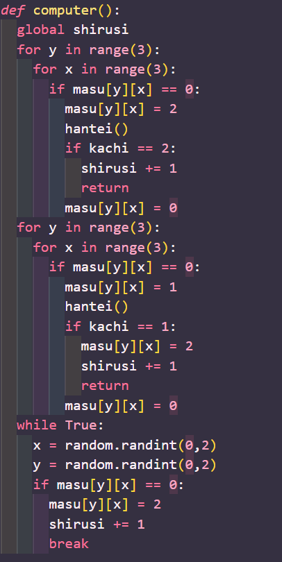

三目並べのリポジトリ
Githubのリポジトリurlを以下に添付しておきます。
https://github.com/xRon0s/pygame
三目並べ
誰もが一度は遊んだことのある三目並べ、そんなゲームを制作しました。
コンピュータとの1vs1で左クリックで自分の印を置くことができます。
また、1ゲームが終わると次のゲームに自動で移動するようになっています。
制作方法
tkinterを用いてフレームやウィンドウなどの外側を制作、リストを用いた盤面の記憶とコンピューターの思考アルゴリズムを設定することで内側の部分を制作しました。
リストの部分

リストを用いて盤面の状態を記憶しています。また、コンピュータのアルゴリズムを設定するために使用します。
アルゴリズムの部分
盤面の状態を基に優先順位を決めて行動を設定しています
ゲーム内容

3x3の盤面で先に自分の印を3つ縦、横、斜めのいずれかに並べると勝利です。

勝ち、負け、引き分けの三種類を設定しており、ゲームが終了すると新しいゲームが開始するようになっています。